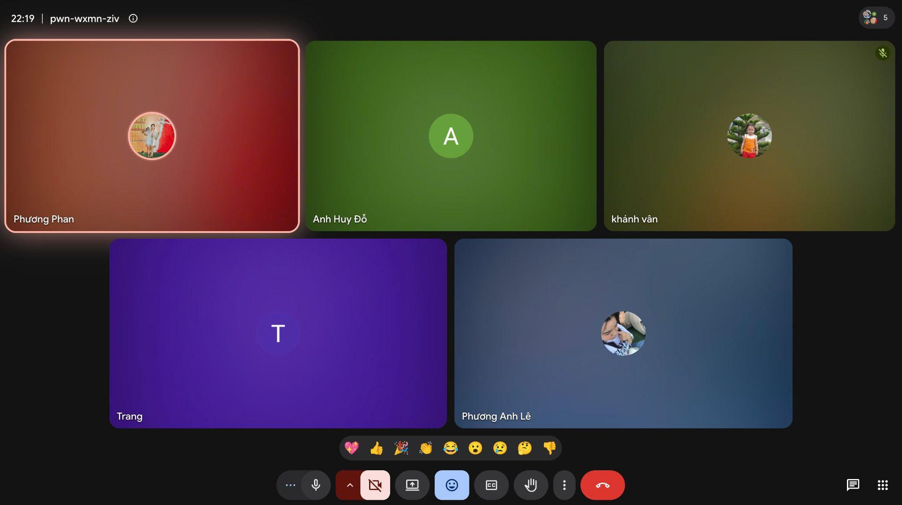
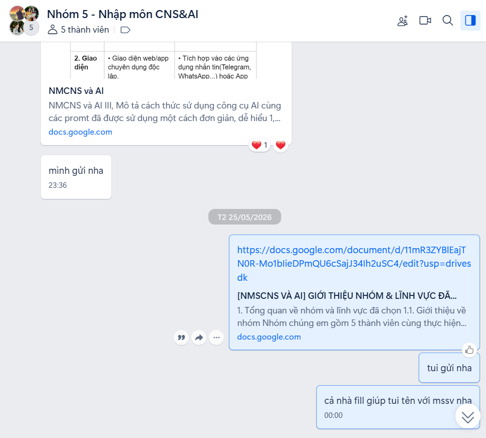
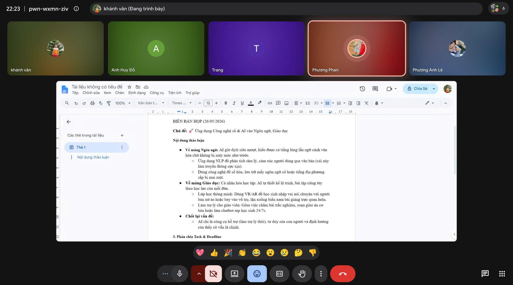
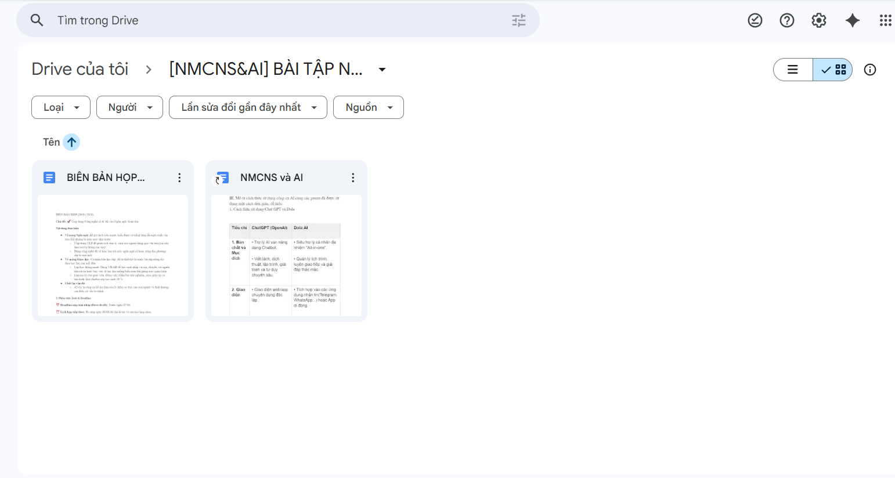

BÁO CÁO CÁ NHÂN VỀ VIỆC ỨNG DỤNG CÔNG CỤ HỢP TÁC TRỰC TUYẾN TRONG THỰC HIỆN DỰ ÁN NHÓM
Họ và tên: Vũ Đan Ngọc Vân Khánh
MSSV: 25041670
Khoa: Ngôn ngữ và Văn hóa Trung Quốc
Trường: Đại học Ngoại ngữ, ĐHQGHN
I. MỞ ĐẦU
Sự phát triển mạnh mẽ của công nghệ số đã tạo điều kiện cho các hoạt động học tập và làm việc nhóm diễn ra linh hoạt hơn. Hiện nay, các công cụ hợp tác trực tuyến không chỉ hỗ trợ trao đổi thông tin mà còn giúp quản lý tiến độ công việc, lưu trữ dữ liệu và cộng tác trên cùng một nền tảng. Đối với sinh viên, việc sử dụng thành thạo các công cụ này là một kỹ năng cần thiết nhằm nâng cao hiệu quả học tập và khả năng thích nghi với môi trường làm việc hiện đại.
Trong quá trình thực hiện dự án nhóm kéo dài một tuần, tôi tham gia tìm kiếm thông tin, xây dựng nội dung và phối hợp với các thành viên để hoàn thiện sản phẩm chung. Để phục vụ cho quá trình làm việc, nhóm đã sử dụng các công cụ như Google Meet, Zalo, Google Docs và Google Drive. Những nền tảng này giúp nhóm duy trì sự kết nối thường xuyên và đảm bảo công việc được triển khai đúng tiến độ.
II. QUÁ TRÌNH THỰC HIỆN NHIỆM VỤ CÁ NHÂN
1. Tham gia họp và trao đổi công việc thông qua Google Meet
Google Meet được nhóm lựa chọn làm nền tảng tổ chức các buổi họp trực tuyến. Trong suốt quá trình thực hiện dự án, tôi tham gia đầy đủ các buổi họp để tiếp nhận nhiệm vụ, trao đổi ý tưởng và cập nhật tiến độ công việc.
Ở giai đoạn đầu, nhóm sử dụng Google Meet để thống nhất chủ đề nghiên cứu, xây dựng kế hoạch thực hiện và phân chia nhiệm vụ cho từng thành viên. Tôi tích cực tham gia thảo luận, đóng góp ý kiến liên quan đến nội dung dự án cũng như đề xuất một số phương án triển khai phù hợp.
Trong các buổi họp tiếp theo, tôi báo cáo kết quả công việc đã hoàn thành, đồng thời tiếp nhận những góp ý từ các thành viên khác để điều chỉnh nội dung. Tính năng chia sẻ màn hình của Google Meet hỗ trợ hiệu quả cho việc trình bày tài liệu và giải thích các vấn đề cần trao đổi.
Việc sử dụng Google Meet giúp các thành viên duy trì tương tác thường xuyên, hạn chế những hiểu lầm trong quá trình làm việc và nâng cao hiệu quả phối hợp nhóm.

2. Trao đổi thông tin và phối hợp công việc qua Zalo
Ngoài các buổi họp trực tuyến, nhóm sử dụng Zalo như một kênh liên lạc chính để trao đổi thông tin hằng ngày. Đây là công cụ quen thuộc, dễ sử dụng và phù hợp với nhu cầu giao tiếp nhanh giữa các thành viên.
Trong quá trình thực hiện dự án, tôi thường xuyên theo dõi các thông báo trong nhóm để cập nhật tiến độ công việc. Khi hoàn thành nhiệm vụ được giao, tôi chủ động thông báo kết quả và gửi các tài liệu liên quan để mọi người cùng theo dõi.
Bên cạnh đó, Zalo cũng hỗ trợ hiệu quả trong việc giải quyết các vấn đề phát sinh. Khi cần làm rõ yêu cầu hoặc xin ý kiến góp ý, tôi có thể liên hệ trực tiếp với các thành viên mà không cần chờ đến buổi họp tiếp theo.
Tuy nhiên, lượng tin nhắn lớn đôi khi gây khó khăn trong việc tìm kiếm thông tin. Để khắc phục, tôi thường lưu lại những nội dung quan trọng hoặc sử dụng tính năng ghim tin nhắn để dễ dàng tra cứu khi cần thiết.

3. Cộng tác xây dựng nội dung bằng Google Docs
Google Docs là công cụ được nhóm sử dụng để biên soạn và chỉnh sửa tài liệu chung. Tôi trực tiếp tham gia soạn thảo nội dung thuộc phần nhiệm vụ được phân công, đồng thời rà soát và bổ sung các thông tin còn thiếu.
Ưu điểm nổi bật của Google Docs là khả năng cho phép nhiều người cùng làm việc trên một tài liệu trong thời gian thực. Nhờ đó, các thành viên có thể theo dõi tiến độ của nhau và đưa ra góp ý ngay trong quá trình chỉnh sửa.
Trong quá trình cộng tác, tôi thường xuyên sử dụng tính năng bình luận để trao đổi ý kiến về những nội dung cần điều chỉnh. Điều này giúp việc thảo luận diễn ra tập trung và minh bạch hơn.
Ngoài ra, lịch sử chỉnh sửa trên Google Docs cho phép theo dõi quá trình đóng góp của từng thành viên, giúp việc kiểm tra và đánh giá mức độ tham gia trở nên thuận tiện hơn.

4. Lưu trữ và chia sẻ tài liệu bằng Google Drive
Để quản lý dữ liệu của dự án, nhóm sử dụng Google Drive làm kho lưu trữ chung. Tôi chịu trách nhiệm tải lên các tài liệu tham khảo, hình ảnh minh họa và những nội dung liên quan đến phần việc của mình.
Tôi sắp xếp dữ liệu thành các thư mục riêng theo từng loại tài liệu nhằm thuận tiện cho việc tìm kiếm và sử dụng. Việc phân loại rõ ràng giúp giảm thiểu tình trạng thất lạc hoặc sử dụng nhầm phiên bản tài liệu.
Google Drive cũng hỗ trợ chia sẻ dữ liệu nhanh chóng thông qua đường liên kết. Nhờ đó, các thành viên có thể truy cập cùng một nguồn tài liệu mà không cần gửi đi gửi lại nhiều lần.
Khả năng đồng bộ dữ liệu trên nhiều thiết bị là một ưu điểm lớn của Google Drive. Tôi có thể truy cập tài liệu bằng điện thoại hoặc máy tính ở bất kỳ đâu, tạo sự linh hoạt trong học tập và làm việc.
III. ĐÁNH GIÁ HIỆU QUẢ SỬ DỤNG CÁC CÔNG CỤ HỢP TÁC TRỰC TUYẾN
Sau khi hoàn thành dự án, tôi nhận thấy việc kết hợp nhiều công cụ trực tuyến đã góp phần nâng cao hiệu quả làm việc nhóm. Mỗi công cụ đảm nhận một chức năng riêng nhưng có sự liên kết chặt chẽ với nhau.
Google Meet hỗ trợ tổ chức các cuộc họp và trao đổi trực tiếp; Zalo giúp truyền đạt thông tin nhanh chóng; Google Docs tạo điều kiện cho việc cộng tác nội dung; trong khi Google Drive đóng vai trò lưu trữ và quản lý dữ liệu. Sự phối hợp giữa các công cụ này giúp quá trình thực hiện dự án diễn ra liên tục và khoa học hơn.
Bên cạnh việc hoàn thành nhiệm vụ học tập, tôi còn rèn luyện được nhiều kỹ năng quan trọng như kỹ năng giao tiếp trực tuyến, kỹ năng làm việc nhóm, kỹ năng quản lý thời gian và kỹ năng sử dụng công nghệ số. Đây là những năng lực cần thiết đối với sinh viên trong thời đại chuyển đổi số hiện nay.

IV. KHÓ KHĂN GẶP PHẢI VÀ GIẢI PHÁP KHẮC PHỤC
Trong quá trình thực hiện dự án, tôi gặp một số khó khăn nhất định.
Thứ nhất, đường truyền Internet đôi khi không ổn định khiến chất lượng cuộc họp trực tuyến bị ảnh hưởng. Để hạn chế tình trạng này, tôi luôn kiểm tra kết nối mạng trước mỗi buổi họp và chuẩn bị phương án dự phòng khi cần.
Thứ hai, việc sắp xếp thời gian họp giữa các thành viên không phải lúc nào cũng thuận lợi do lịch học khác nhau. Nhóm đã chủ động thống nhất lịch từ sớm và lựa chọn khung giờ phù hợp với đa số thành viên.
Thứ ba, trong quá trình chỉnh sửa tài liệu chung, đôi khi xảy ra tình trạng trùng lặp nội dung hoặc chỉnh sửa chồng chéo. Để khắc phục, nhóm phân công rõ ràng phạm vi công việc của từng người và thống nhất trao đổi trước khi thực hiện những thay đổi quan trọng.
Nhờ những giải pháp trên, các khó khăn phát sinh đã được giải quyết kịp thời và không ảnh hưởng đáng kể đến tiến độ dự án.
V. KẾT LUẬN
Qua quá trình tham gia dự án nhóm và sử dụng các công cụ hợp tác trực tuyến như Google Meet, Zalo, Google Docs và Google Drive, tôi đã có cơ hội trải nghiệm thực tế về phương thức làm việc nhóm trong môi trường số. Những công cụ này giúp tăng cường khả năng kết nối, nâng cao hiệu quả phối hợp và hỗ trợ quản lý công việc một cách khoa học.
Bên cạnh việc hoàn thành nhiệm vụ được giao, tôi còn tích lũy thêm nhiều kỹ năng cần thiết cho học tập và công việc trong tương lai. Từ những trải nghiệm thực tế đó, tôi nhận thấy việc sử dụng thành thạo các công cụ hợp tác trực tuyến là yếu tố quan trọng góp phần nâng cao chất lượng và hiệu quả của các dự án nhóm trong thời đại công nghệ hiện nay.